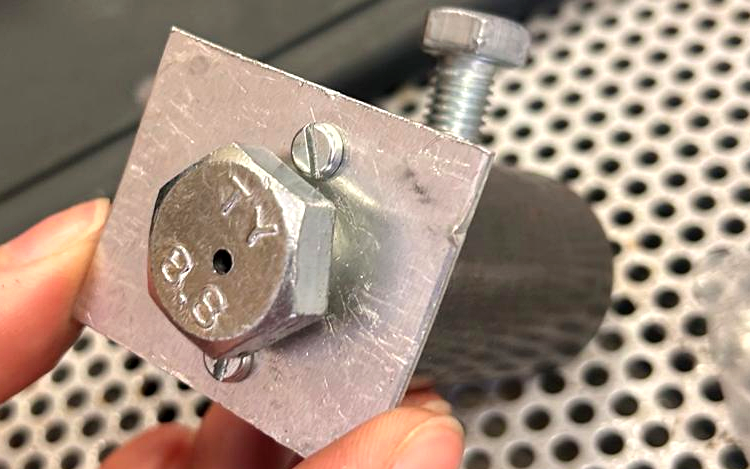

Extrusion nozzle — design, manufacture & defect troubleshooting
Sustainable manufacturing project, primary ownership of fabrication in a two-person team

What it did
Machined the nozzle body(part of an Extruder machine) on a lathe, then drilled and threaded the mounting holes on the milling machine, trimming fixing screws to length, all on manual workshop equipment, following Precious Plastics' build guide for the design.
💭 Design reasoning
- Took primary ownership of fabrication within a two-person team, meaning the machining plan had to account for what could actually be achieved accurately by hand, not just what the CAD file specified.
- After manufacture, identified a tolerance defect: a screw-thread hole had been machined to the wrong size, preventing correct assembly.
- Rather than re-ordering material and losing time and cost, diagnosed the root cause and engineered a corrective fix using a secondary mounting plate — solving the immediate problem without discarding the part.
What changed
Turned a manufacturing defect that would normally cause project delay and material waste into a working assembly, without needing to restart fabrication from scratch.
Who benefited
The project stayed on schedule and within budget despite a real manufacturing error
Limitation
fixed assembly hasn't been tested under load yet, so its long-term reliability is still unconfirmed.
✓ Outcome
Functional extrusion nozzle, successfully corrected and integrated despite the initial tolerance defect.